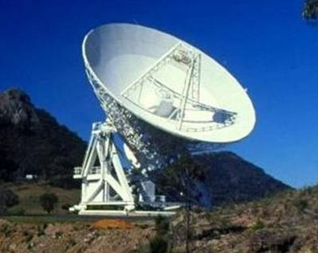

The Mopra telescope is a 22-m single-dish radio telescope situated near the Warrumbungle National Park, just outside the town of Coonabarabran in New South Wales, Australia. It is operated by the Australia Telecope National Facility (ATNF), a branch of CSIRO (the Commonwealth Scientific and Research Organization), which also operates the ATCA (Australia Telescope Compact Array) and Parkes observatories. In single-dish mode, Mopra is mainly used as a millimetre-wavelength instrument, primarily for 3-mm spectroscopy of molecular line emission from evolved stars and star-forming regions. Observations at 7- and 12-mm are also possible. It can be used either in pointed observations or in an ‘on-the-fly’ raster mapping mode, whereby the dish slews across the sky collecting data. During VLBI (Very Long Baseline Interferometry) sessions, Mopra is routinely used at cm wavelengths in conjunction with the other telescopes that comprise the Australian Long Baseline Array (LBA). Since 2007, Mopra has been operated remotely from the control room at the ATCA.
